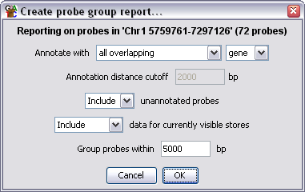
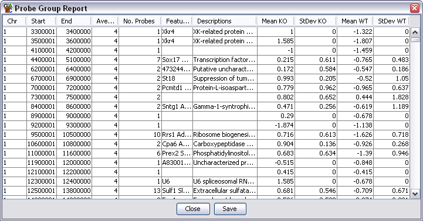

The Probe Group Report
The Probe Group Report is similar to the
Annotated Probe Report
except that it allows you to group together closely positioned probes
to define larger regions of interest.
Options

- You can choose what sort of position a feature must have relative to
a region of interest to become annotated. You can choose from overlapping, enclosed,
closest, surrounding, upstream and downstream
- If you select anything other than overlapping or enclosed you need to set a cutoff
for how far away a feature can be and still be associated with a region of interest.
- You can choose to omit any regions which couldn't be associated with a
feature from the final report
- You can choose to append extra columns on the end of the report for all
currently visible data stores which contain the average current quantitated data
for each region
- You can choose how far apart adjacent probes can be to still be considered
as part of the same region of interest. There is no limit to how many probes
can be within a region of interest.

Output Columns
The columns in an annotated probe report are:
- Chromosome
- Start Position
- End Position
- Average Probe Value - When a filter creates a probe list it can associate a value with
each probe in the list (p-value etc.). This column shows the average value for all probes
in the region. Some filters don't add a value in which case this column will be blank.
- Number of Probes - A count of how many probes were included in this region
- Feature name - will be blank if there is no associated feature. For overlapping
features there will be multiple entries in this column (and description) if the
probe is overlapped by more than one feature
- Description
- Data Columns - if you selected to export data for current stores then there will
be two extra columns per data store containing the mean and standard deviation of the
set of current quantitated values for each set of probes
You can choose to sort the report on any of the columns. Just click on a column
header to sort the data on that column. Click again to sort in the opposite direction.
If you double click on any line in the report the chromosome view will jump to that
point in the genome so you can see the data underlying that region.
Saving the Report
If you press the Save button at the bottom you can save the full report to a file.
The files created are tab-delimited text files which you should be able to open in
a spreadsheet application for further processing. The saved report will keep the
current order of the rows in the report.